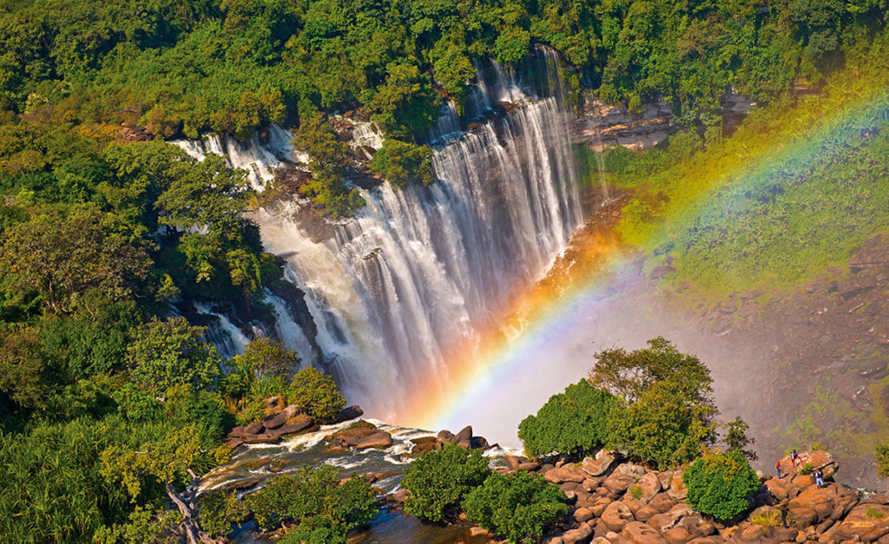
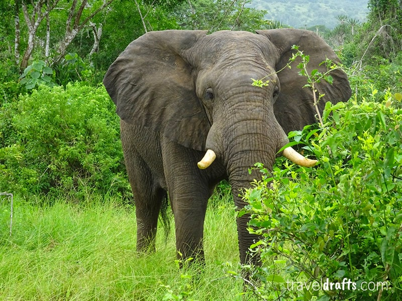
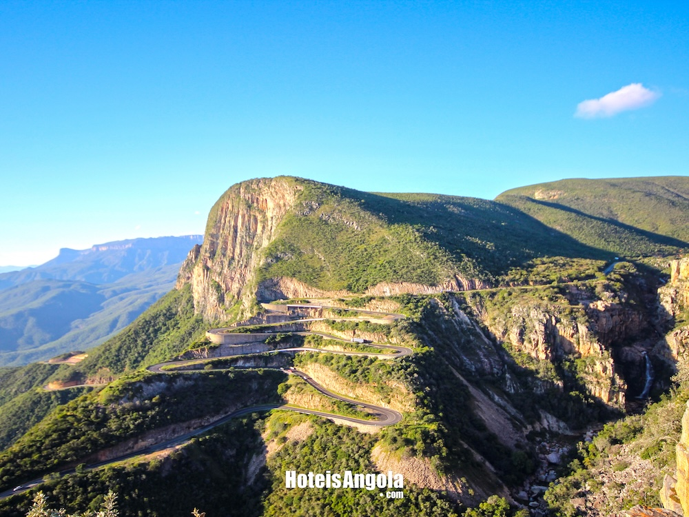

Guias práticos, segredos de viagem e histórias do interior de Angola — escritos por quem conhece cada picada.

A hora certa, o equipamento ideal e as posições secretas para capturar a majestade desta fissura de 1.000 metros com a luz que lhe faz justiça.

Acesso, épocas do ano, alojamento próximo e os cuidados essenciais para uma visita segura às maiores quedas de Angola.

Sem romantismos e sem alarmismo: o que realmente precisa de saber sobre segurança nas estradas do interior angolano.

O único Património Mundial da UNESCO em Angola e a história viva de um reino que existia antes de Portugal "descobrir" o Brasil.

Documentação, moedas locais, transportes, áreas seguras — os primeiros passos para quem chega pela primeira vez à capital.
.png)
Equipamento recomendado, horários de luz dourada e as localizações secretas que transformam uma foto comum numa imagem de revista.

Uma das paisagens mais únicas do continente africano — e como chegar lá sem depender de pacotes turísticos.

Da farmácia de bordo ao jerricão extra de combustível — a checklist definitiva para rotas off-road em Angola.